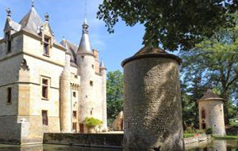
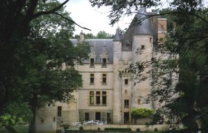
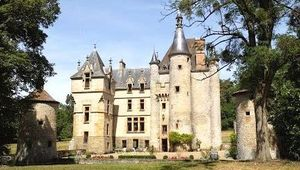
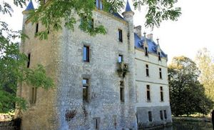
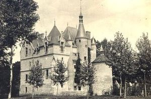
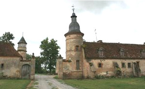
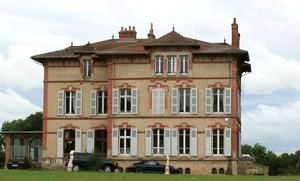

Recensement Jean-Claude Truffet
| Département | 03 — Allier |
| Canton | Souvigny |
| Commune | Agonges |
| Type d'édifice | Château |
| Période d'origine | XV |







L'AUGERE, St-Marc, les anglais, pendant la guerre de 100 ans, auraient détruit le château qui aurait été reconstruit en 1441 à la place actuelle par François de Culan, ancêtre de la famille de Laforcade, le château aurait toujours été dans la famille, mais transmis souvent par les femmes et a, de ce fait, souvent changé de nom de propriétaire.. Dès 1301, à en croire les noms féodaux, un certain Jean de lAugère rendait hommage pour sa maison , en la châtellenie de Belleperche. Cest une branche cadette de cette famille, à en croire Tiersonnier et des Gozis, qui se serait fixée à Agonges, en adoptant pour sa nouvelle installation, le même nom de Laugères. Le château de lAugère fut construit vers la fin de la guerre de 100 ans sous Charles VIII, petit roi de Bourges, gentil dauphin dont le royaume se situe au sud de la Loire. Au nord et à louest dominent les gens de lAngleterre qui ravagent les provinces et qui, en 1429 assiègent la ville dOrléans (seule ville au nord de la Loire tenue par Charles VII. En 1503, l'écuyer Guillemin de Laugère fait hommage à la duchesse de Bourbon. En mars 1647, le sieur de Laugère était François de Culant avocat au parlement. La terre était vers 1750 dans les mains de Pierre Gaspard Hugon, qui avait épousé Elisabeth Geneviève Guillouet d'Orvilliers. Encore à notre époque : de Montbel, de Vélard de Châteauvieux, de Gaudart dAllaines, de Laforcade, et aujourdhui, Madame Agnès de Chatelperron née de Laforcade descent de la famille de Jeanne dArc par Jehann son frère, écuyer et seigneur de Vaucouleurs dont la fille Madame Crespire de Vaucouleurs épousa le 16 octobre 1558 le chevalier Espérant de Godart, seigneur de Marteau de Montereau de Maurepart dAllaines, ancêtre de la famille de Laforcade. aujourd'hui propriété de monsieur Yves Challas. ECHARDONS Dans la nomenclature des lieux-dits, Les Echardons sont portés sur la commune de Souvigny, proche mais non limitrophe. La maison a appartenu à la famille Saulnier de Praingy et a été entièrement transformée au XVIIIe siècle. Le 2 septembre 1784, Claude Parfait Amyot, écuyer ancien officier d'artillerie, décédait à l'age de 84 ans dans sa maison des Echardons.
L'Augère date de 1441. était pourvu d'un donjon carré, donjon médiéval coiffé d'un toit et agrandi d'un bâtiment néogothique au XIXe siècle a conservé ses douves en eau, d'une tourelle en façade et de douves en eau. L'enceinte était conçue pour abriter les nouvelles armes à feu: canons ou couleuvrines. Doté au cours du XIXe siècle de toitures dues à l'architecte Jean Moreau, le donjon médiéval de Laugèrea été agrandi à la fin du siècle par l'adjonction d'un corps de bâtiment construit dans le style néo-gothique par René Moreau et terminé en 1901. Les communs furent construits juste avant 1914 par l'entrepreneur Charles Joseph de Souvigny. L'ensemble présente une silhouette équilibrée et assez homogène, au milieu de douves en eau. Echardons, a été reconstruit en 1792 et il ne reste des bâtiments antérieurs que deux tours et un pigeonnier, édifice reconstruit à l'époque moderne, le château dispose des bâtiments sur les trois côtés d'une cour intérieure, l'entrée sur le quatrième côté est marquée par un portail à piliers carrés, coiffés de pyramides tronquées et boules de pierre, le bâtiment central à un niveau et comble, éclairé par des lucarnes, est accosté par une petite tour ronde, précédé d'une cour entourée sur trois côtés de bâtiments de communs. Au sud-ouest de cet ensemble, présence d'une tour qui a été coiffée au XVIIIe siècle d'un dôme à lanternon, accolée au pignon nord d'un bâtiment en rez-de-chaussée couvert d'un toit mansardé. Subsistent également une seconde tour ancienne, ainsi qu'un pigeonnier. Ces bâtiments représentent un bon exemple de l'architecture rurale du XVIIIe siècle.
Famille de Laforcade
"
Château de la l'Augère et d'Echardons.